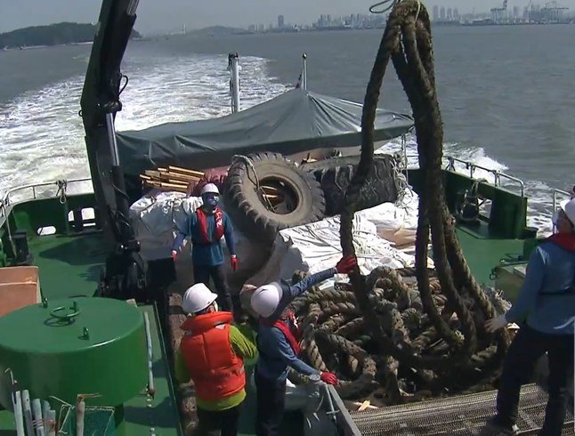
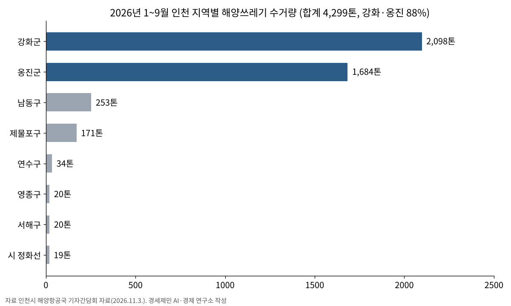
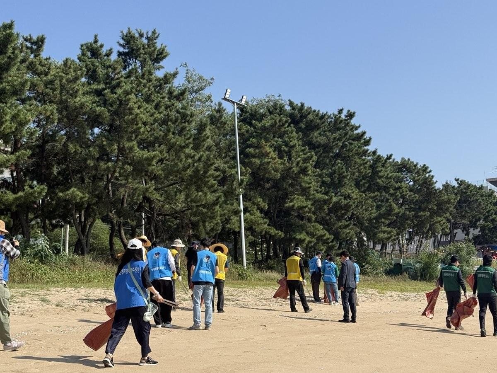

인천 앞바다 쓰레기 9월까지 4299톤 수거…섬 쓰레기 1170톤 뭍으로
강화·옹진에서 3782톤, 전체의 88%
도서쓰레기 정화운반선 43회 운항, 지난해 223톤의 5배 반출
올해 예산 122억원…2024년 98억원에서 2년 새 24억원 늘어
AI경제저널=김갑봉 기자 | 인천시(시장 박찬대)는 올해 1월부터 9월 말까지 인천 앞바다에서 해양쓰레기 4299톤을 수거·처리했다고 3일 밝혔다. 시는 이날 해양항공국 기자간담회에서 해양쓰레기 수거 실적과 사업 계획을 설명했다.
시는 올해 해양쓰레기 수거·처리에 122억2200만원을 쓴다. 국비 35억5200만원과 기금 31억9000만원, 시비 40억9200만원, 군·구비 13억8800만원이다.
강화·옹진이 88%
해양항공국 기자간담회 자료를 보면 수거량은 강화군이 2098톤으로 가장 많다. 옹진군이 1684톤으로 뒤를 이었다. 두 군을 합친 3782톤은 전체의 88.0%다(연구소 계산).

남동구 253톤, 제물포구 171톤, 연수구 34톤, 영종구·서해구 각 20톤이다. 시 해양환경정화선 「인천씨클린호」는 인천 연안을 떠다니는 부유쓰레기 19톤을 건졌다.
강화는 한강·임진강 하구와 맞닿아 있다. 시 예산에서 가장 큰 사업도 해안·부유(하천·하구)쓰레기 정화사업으로 78억5600만원이다. 전체 예산의 64.3%다(연구소 계산).

섬 쓰레기 반출 5배
섬에 쌓이는 쓰레기는 배로 실어 내야 한다. 시는 도서쓰레기 정화운반선 「옹진청정호」를 9월 말까지 43회 띄워 폐기물 1170톤을 육지로 옮겼다.
지난해에는 이 배를 4월부터 띄웠다. 시가 지난해 11월 낸 보도자료를 보면 10월 말까지 17회 운항해 223톤을 반출했다. 올해는 9월 말까지 운항 횟수가 2.5배, 반출량이 5.2배다(연구소 계산). 운반선 운영 지원 예산은 지난해와 같은 10억8000만원이다.
시는 사람이 닿기 어려운 섬 해안에는 드론을 투입했다. 시는 지난달 20일 옹진군 문갑도와 소야도 해안에서 주민들이 모은 해양쓰레기 약 4.4톤을 고중량 드론으로 옮겨 옹진청정호에 실었다고 밝혔다. 이 드론은 한 번에 100㎏까지 나른다. 시는 9월 한 달 동안 같은 방식으로 4.6톤을 수거했다.
주민 연인원 5만3528명
해안 정화는 주민 손으로 한다. 올해 9월까지 연인원 5만3528명이 해안 정화에 참여했고, 이 가운데 취약계층이 7147명이다. 시는 주민 참여형 정화사업이 지역 일자리와 지역경제에도 보탬이 된다고 설명해 왔다.

조업 중에 그물에 걸려 올라온 쓰레기는 시가 사들인다. 올해 수매량은 2277마대, 54만1020ℓ다. 수매사업 예산은 2억원이다.
시는 민간단체 3곳의 정화활동을 지원했다. 시민과 공공기관 관계자 899명이 참여한 연안 정화활동에서는 34톤을 수거했다.
예산 98억→112억→122억
시가 지난해 11월 27일 밝힌 해양쓰레기 관련 예산은 2024년 98억원, 2025년 112억원이다. 올해 122억2200만원은 2024년보다 24억2200만원(24.7%) 많다(연구소 계산).
시는 당시 서해5도는 외국에서 떠밀려 오는 쓰레기가 많고 넓은 바다에서 거둔 폐기물을 육지까지 실어 와야 하는 부담이 크다며, 늘어난 국비를 서해5도와 주변 바다 정화에 먼저 쓰겠다고 밝혔다.
시는 최근 3년 동안 해마다 약 5000톤을 수거했고, 지난해에는 10월 말까지 4726톤을 거뒀다. 시는 11월과 12월에도 정화활동을 이어 간다.
박광근 시 해양항공국장은 "깨끗한 인천 앞바다를 만들기 위해 해양쓰레기 수거 사업을 더욱 강화하겠다"며 "관계기관 및 시민들과 협력해 해양생태계를 보호하고 깨끗한 바다 환경을 조성하는 데 최선을 다하겠다"고 말했다.
참고문헌
- "인천시, 해양쓰레기 정화 총력… 깨끗한 인천 앞바다 조성 박차", 인천시, 2026.11.3., https://www.incheon.go.kr/IC010205/view?repSeq=DOM_0000000015881725
- "해양항공국 기자 간담회 자료(인천앞바다 해양쓰레기 수거·처리)", 인천시 해양항공국, 2026.11.3.
- "인천시, 위성·드론으로 해양쓰레기 탐지부터 수거·반출까지 원스톱 처리", 인천시, 2026.10.23., https://www.incheon.go.kr/IC010205/view?repSeq=DOM_0000000015809952
- "인천시, 2026년 해양쓰레기 정화 국비 총 120억 원 확보 … 서해5도 중심 청정해역 조성 가속화", 인천시, 2025.11.27., https://www.incheon.go.kr/IC010205/view?repSeq=DOM_0000000013624716
- "인천시, 올해 4,726톤 해양쓰레기 수거… 지속 가능한 청정 해양환경 조성 앞장", 인천시, 2025.11.11., https://www.incheon.go.kr/IC010205/view?repSeq=DOM_0000000013495643
[사진 출처]
- [사진1] 인천광역시, 「인천시, 해양쓰레기 정화 총력… 깨끗한 인천 앞바다 조성 박차」 보도자료 관련사진 「해양환경정화선(인천씨클린호) 부유쓰레기 수거 작업」, 2026.11.3., 공공누리 제1유형(출처표시), https://www.incheon.go.kr/IC010205/view?repSeq=DOM_0000000015881725
- [사진2] 인천광역시, 같은 보도자료 관련사진 「해안가 정화활동」, 2026.11.3., 공공누리 제1유형(출처표시), https://www.incheon.go.kr/IC010205/view?repSeq=DOM_0000000015881725
관련기사
- 인천시, 여객선 운임지원 2027년 손질…7월 끊긴 타 시·도민 지원은 50% 검토
- 인천항 크루즈 올해 113항차·내년 132항차…시, 지역축제·상권 연계 관광 강화
- [해양경계] 한중 해양경계 16차 회담, 서해5도 앞에서 멈춘 세 경계선
- [해상풍력 기획①] 인천 해상풍력, 섬 주민 몫은 법에 없다… 세 갈래 공백
저작권자 © AI경제저널 무단전재 및 재배포, AI학습 및 활용 금지